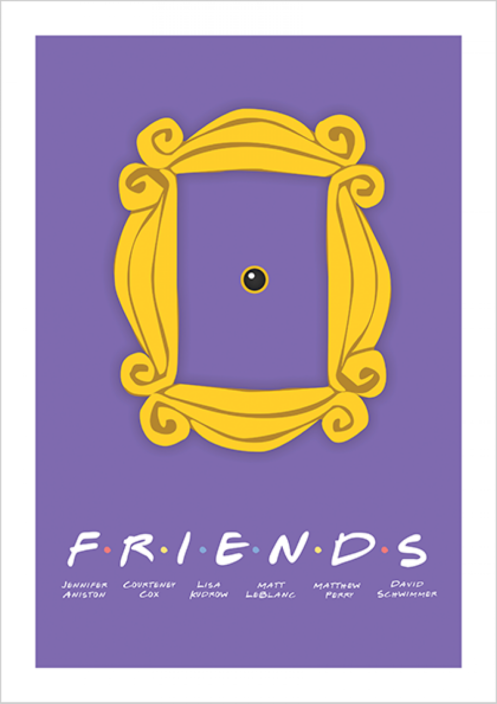

Las críticas DEL PUBLICO con la serie final fueron mixtas. Robert Bianco de USA Today describió el final como entretenido y satisfactorio, y lo elogió por mezclar hábilmente la emoción y el humor mientras destacaba cada una de las estrellas. Sarah Rodman, del Boston Herald, elogió a Aniston y Schwimmer por su actuación, pero consideró que el reencuentro de sus personajes era "demasiado prolijo, incluso si era lo que la mayoría de las legiones de fanáticos querían".
Roger Catlin del Hartford Courant consideró que los recién llegados a la serie estarían "sorprendidos de lo risueño que podría ser el asunto, y de cómo casi cada mordaza depende de la pura estupidez de sus personajes". Ken Parish Perkins, escribiendo para Fort Worth Star-Telegram, señaló que el final fue "más conmovedor que cómico, más satisfactorio en términos de cierre que ridículamente gracioso".
